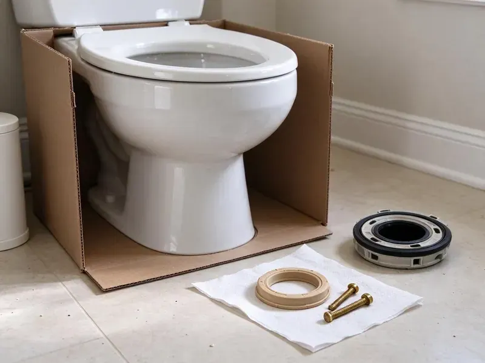

Sink Repair in Wauwatosa, WI
Dripping trap, wobbly basin or a drain that crawls? Our plumbers repair bathroom sinks across Wauwatosa, WI with the right parts on the truck.
- Fast Local Service
- Guaranteed Work
- Licensed Wisconsin Plumbers
- Parts Carried on Every Truck
Expert Sink Repair Solutions for Homes in Wauwatosa, WI.
Call now and a licensed plumber can often be at your door the same day.
Professional Sink Repair in Wauwatosa, WI Homes
HKV Plumbing sees the same sink problems every week in Wisconsin homes, mostly mineral buildup, worn washers and plastic traps that crack after years under a warm vanity. Our plumbers carry common trap sizes, stoppers and shutoff valves so the job gets done on the first visit. You get a straight price and a sink that drains and stays dry.
Our expertise includes:
- Repairing or replacing worn-out sink components
- Fixing leaks from P-traps and supply lines
- Repairing leaky faucets and drains.

Additional Bathroom Plumbing Services in Wauwatosa, WI
From toilets to showers, our bathroom plumbing team in Wauwatosa, WI handles repairs, installs, and upgrades with tidy, code-compliant work.


Customers
Why Choose HKV Plumbing for Sink Repair in Wauwatosa, WI?
Choosing HKV Plumbing for your sink repair means you're getting local plumbers who understand the plumbing challenges in Wisconsin. We focus on clear communication and lasting repairs.
- Honest Diagnosis, We show you the failed part before we replace anything.
- Local Knowledge, We are well versed in common plumbing issues in Wauwatosa, including those related to local water quality and building codes.
- Clean Work, We protect the vanity and countertop and haul away old parts.
Citywide Coverage
No matter where your home is located in Wauwatosa, we're committed to providing prompt and efficient sink repair services. Our local presence means we can reach you fast.
Experienced Team
Our plumbers have rebuilt thousands of pop-up drains and traps and know the quirks of brands like Kohler, Moen, Delta and American Standard. They can tell a supply-line leak from a faucet-body leak in a few minutes.
Safety-First Approach
At HKV Plumbing, safety is a priority in every sink repair we undertake in Wauwatosa. We adhere strictly to all local plumbing codes and safety standards to protect your home and ensure the integrity of your plumbing system.
Trusted Certified Wauwatosa Plumbing Services Professionals
At HKV Plumbing, we take pride in providing certified plumbing services throughout Wauwatosa, WI. Backed by leading industry credentials, our experienced plumbers combine technical skill with genuine customer care. Whether it is repair, installation, or maintenance, we follow strict safety and quality standards to deliver long-lasting results you can trust.
Call Us Now PHCC Plumbing Contractor Recognition
PHCC Plumbing Contractor Recognition Better Business Bureau (BBB) Accreditation
Better Business Bureau (BBB) Accreditation Angi Certified Pro
Angi Certified Pro ISO 9001 Quality Management Certification
ISO 9001 Quality Management CertificationTrusted Sink Repair Services in Wauwatosa, WI
Sink Trap and P-Trap Repair in Wauwatosa, WI
The P-trap under your sink is essential for preventing sewer gases from entering your home and catching items that fall down the drain. If it's leaking, corroded, or improperly installed, it can cause serious problems. We provide expert repair and replacement of P-traps, making sure of a proper seal and function for your sink plumbing in Wauwatosa, WI.

Emergency Sink Repair in Wauwatosa, WI
A burst pipe under the sink or a major leak needs immediate attention to prevent water damage to your Wauwatosa home. HKV Plumbing offers emergency sink repair services for urgent situations. Our rapid response team is available to address critical sink issues fast and effectively, minimizing damage and restoring peace of mind in Wisconsin.
Clogged Sink Drain Repair in Wauwatosa, WI
A slow or completely blocked sink drain is a common nuisance in Wauwatosa homes. This can be caused by grease, food particles, hair, or even mineral buildup from hard water. Our plumbers use professional tools like augers and hydro-jetting equipment to carefully and effectively clear even the toughest clogs, restoring proper drainage to your kitchen or bathroom sink in Wisconsin.
Bathroom Sink Repair in Wauwatosa, WI
Bathroom sinks often develop issues such as slow drains due to hair and soap scum buildup, leaky pop-up assemblies, or loose faucet handles. HKV Plumbing provides focused repair services for all types of bathroom sinks, including pedestal, wall-mount, and vanity styles. We can replace corroded washers, adjust drain stoppers, or fix supply line leaks, bringing your bathroom plumbing back to optimal condition. We make sure all repairs meet Wisconsin plumbing standards for residential properties.
Loose or Cracked Basin Repair in Wauwatosa
Undermount sinks are held by clips and epoxy that can let go, leaving a gap and a leak along the counter. Vessel sinks can rock on a worn mounting ring, and older porcelain basins can crack around the drain. We reattach, reseal or replace the basin as needed and recaulk with a mildew-resistant silicone. We will tell you honestly when a crack means replacement is the better value.
Sink Water Pressure Issues in Wauwatosa, WI
Low water pressure at your sink can be frustrating and indicate underlying plumbing problems such as mineral buildup in the aerator, faulty faucet cartridges, or even larger issues within your home's water lines. Our technicians in Wauwatosa, WI can correctly diagnose the cause of low pressure and implement the necessary repairs to restore full water flow to your sink.
Overflow and Drain Body Leak Repair in Wauwatosa, WI
Water that appears only when the sink is full often comes from the overflow gasket or the drain flange putty. We pull the drain, clean the old putty or sealant, and reset the flange with fresh plumber's putty or silicone based on the basin material. Then we fill the bowl past the overflow and check for drips. This kind of leak is easy to miss and easy to fix once we find it.

Fixing Loose or Wobbly Sinks in Wauwatosa
Over time, sinks can become loose or wobbly, especially if they are undermounted or pedestal styles. This can be due to failing caulk, loose mounting clips, or even issues with the countertop. Our plumbers in Wauwatosa can re-secure your sink, making sure it's stable and properly sealed to prevent water infiltration and further damage to your cabinetry or flooring.
Local Sink Repair Near Me in Wauwatosa, WI
When you search for "sink repair near me" in Wauwatosa, WI, HKV Plumbing is your trusted local choice. We pride ourselves on quick response times and quality workmanship for all types of sink problems. Our team is always ready to serve your neighborhood.
Our commitment to the Wauwatosa community means we're never far away when you need expert sink repair. We understand the plumbing challenges faced by homeowners in Wisconsin, providing tailored solutions that last. Just give us a call at (414) 432-4641.
HKV Plumbing at a Glance
- Fully licensed plumbing team covering Wauwatosa, WI
- 24/7 emergency service with same-day scheduling
- Upfront, flat-rate pricing before work begins
- 4.8-star rated by 448+ Wisconsin customers
Wauwatosa Map
Wauwatosa Information
- Population
- 47,038
- Area codes
- 414/262/920
- Service area
- Wauwatosa and communities within 40 miles
- Nearby
- Milwaukee, West Allis, Waukesha, Racine
For homes in Wauwatosa, WI, proper sink maintenance and timely repairs matter, especially with mineral buildup and the potential for tree root intrusion into older drain lines, which can lead to frequent clogs.
Expert Services
Trust our professionals for reliable HKV Plumbing solutions in Wauwatosa, WI.
Our Specialized Plumbing Services in Wauwatosa, WI
At HKV Plumbing, we provide a complete range of plumbing services across Wauwatosa, WI. From leak detection to full system installations, our team ensures fast, precise, and affordable service for both residential and commercial properties. Explore our core services below:


How Our Sink Repair Process Works in Wauwatosa, WI
We've streamlined our sink repair process to make it as convenient and stress-free as possible for homeowners in Wauwatosa. Here's what you can expect when you choose HKV Plumbing.
Request a Quote
Contact us at (414) 432-4641 or through our website to schedule your sink repair service. We'll gather information about your issue and set up an appointment that fits your schedule.
On-Site Diagnosis
Our skilled plumber will arrive on time, inspect your sink, and correctly diagnose the problem. We use specialized tools to identify hidden issues and explain the necessary repairs clearly.
Transparent Pricing
Before any work begins, you'll receive a detailed, upfront quote for the repair. We believe in transparency, so there are no hidden fees or surprises, just honest pricing.
Frequently Asked Questions About Sink Repair in Wauwatosa
Simple fixes like a P-trap, washer or supply line usually run $125 to $250. Pop-up drain replacement or resetting a loose basin typically costs $175 to $400. We quote a flat price before we start.
Most common sink repairs, such as fixing a leaky faucet or clearing a standard clog, can be completed within 1 to 2 hours. More involved issues, like major drain line repairs or complex disposal replacements, might take longer. We aim for efficiency without sacrificing quality.
While minor clogs or replacing an aerator can sometimes be a DIY project, most sink repairs, especially those involving leaks, disposal issues, or complex clogs, are best left to a professional. Improper repairs can lead to greater damage, water leaks, or code violations in Wisconsin homes.
Private wells serve a large number of rural homes, and some Wisconsin well water carries iron, nitrates or bacteria that call for regular testing. Hard water contains high levels of minerals like calcium and magnesium that can accumulate in faucets, aerators, and drains, reducing water flow and causing clogs. We address this by cleaning or replacing affected components and can advise on water softening solutions if repeat issues are a concern for your Wauwatosa home.
Key indicators include persistent dripping from the faucet, slow drainage, water pooling under the sink, strange noises from the garbage disposal, or an unpleasant odor coming from the drain. Any of these symptoms warrant a professional inspection to prevent further damage.
Persistent sink clogs in Wauwatosa homes are often caused by a buildup of grease, food particles, soap scum, and hair over time. Private wells serve a large number of rural homes, and some Wisconsin well water carries iron, nitrates or bacteria that require regular testing. Mineral buildup inside pipes can narrow the drain and worsen clog issues, and improper use of garbage disposals can also be a factor.
Generally, minor sink repairs like fixing a leak or replacing a faucet do not need a permit in Wauwatosa, WI. However, if the repair involves significant alterations to the existing plumbing system, moving drain lines, or replacing entire sections of pipe, a permit may be necessary. We can advise you on any permit requirements.
Yes. Our labor is guaranteed and most replacement parts carry the manufacturer's warranty. We will explain the coverage on your invoice.
What People Are Saying About Our Plumbing Experts?

Robert G.
The trenchless sewer replacement saved our front yard. They walked us through the camera inspection footage first so we knew exactly what we were paying for.
Sewer Line Replacement · Racine, WI
Patricia H.
We had a slab leak that two other companies could not find. HKV Plumbing located it in under an hour, explained our options, and the price matched the quote to the dollar.
Slab Leak Repair · Racine, WI
Mark T.
When our office needed drain cleaning, HKV Plumbing provided quick, reliable service. The plumber arrived on time and made sure every drain flowed perfectly before leaving. Very satisfied.
Drain Cleaning · Waukesha, WIJames P.
Our commercial plumbing system had a leak under the sink, and HKV Plumbing handled it professionally. The plumbers arrived quickly and restored everything without disruption to our customers.
Commercial Plumbing · Kenosha, WI
Daniel K.
A pipe burst at 11 pm and they actually answered. The plumber showed up within the hour, shut everything down, and had us back to normal the next morning. Could not ask for more.
Emergency Plumbing · Wauwatosa, WI
Emily R.
I called HKV Plumbing for plumbing repair, and the technician was fast, polite, and thorough. They explained the problem clearly and fixed it the same day. I will definitely hire them again. Highly recommended!
Plumbing Repair · Milwaukee, WI